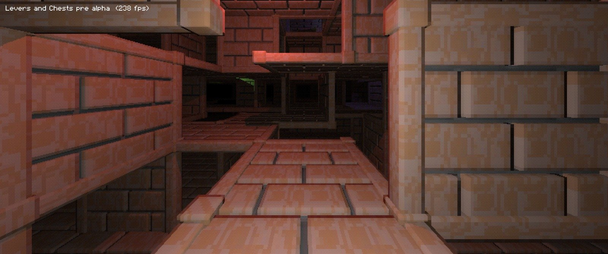

Notch tweets a screenshot showing off a voxel conversion of the engine. History is repeating?

This page is meant to archive media related to Notch's new 2024 project - simply titled Levers and Chests (he used
this name many times already, thus the 2024 in the title). The page will be updated with latest screenshots, news,
and other related progress information. Follow @notch and @BitshiftEnt for news in real time.
The game is currently heading for a roguelike looter shooter combined with a first person dungeon
crawler [*]. It's written in JavaScript and
WebGL [*].
There is currently no playable build of the game out.
If you believe something is missing here, don't worry and throw me a mail: contact(at)dejvoss.cz.
Notch tweets out a new screenshot with two
pinkies in the generated level.
He them makes a post explaining what Pinkies are,
and that they are just a placeholder.
He then tweets about rendering voxels.
Even later he tweets about giving the engine a
name. "Maude" is winning for now.
Even even later he shares a pic of multiple
floors being generated.

Notch revealed the name + logo of the new studio
- Bitshift Entertainment!
There's also a Twitter account for the studio.
Notch tweets a screenshot showing off a voxel
conversion of the engine. History is repeating?
Notch shared a screenshot of a Prelude of the
Chambered like prison level. The game now has a label. As usual during these days, Notch is using the Levers and
Chests name. Placeholders ftw!
He then posts yet another screenshot, showing off
different ground heights.
He also later posts about the game running very
well on his computer. Works on my machine(tm)!
Notch is thinking of adding translucent
textures.
Notch has decided to keep the game a hardcore
roguelike.
He later posted screenshots of a bunch of Voxel
Doom's Pinky models being rendered.
Notch wrote about the game's direction being a
looter shooter, and posted a screenshot with
fixed shadows.
He then later posted about thinking changing the
engine to be tile based, and thinking of using voxels.
Notch posted two screenshots in this Twitter
thread which include shadows, lighting and a moire effect.
Notch posted a screenshot of deferred lighting that he's been working on in the past.
Twitter post.

Notch posted three screenshots in this Twitter
thread, this being the first time we've had any idea what the game looks like. It has the great Notch style as
usual!

Later, he replies to someone with a screenshot of
a brown light source.
He also replies with a video of walking around
the level with some lights.
Notch reassured he's still working on the game in a tweet
"Game Dev life is going well. I wake up excited to go
to the office, feel surprised when it's already 6:30
pm.
Current project is a dungeon crawler to get it out of my system.
That, and coming up with logos for the studio apparently, which some might say is premature. But fun.".
Notch confirmed he's working on the game, a dungeon crawler, by the tweet "Some of you might have figured out I have an office I
go to where I try to make a game now. No promises, I know myself almost as well as you know me, but it's feeling
real positive.
Current plan is to maybe whip together a dungeon crawler to get us started. We'll see.".
Notch tweets out "So what game do you want?",
implying the game studio is actually happening.
He then tweets "Hey @Microsoft
, do you remember if I can use the name 0x10c, or if it ended up with you?" later that day, implying he'd
return to the game or at least possiby use the name for a similar project. It is unknown if they got back to him.
Notch tweets out "Is "no1212ch" a good studio
name?", which I believe is the earliest indirect mention of doing something related to the project.